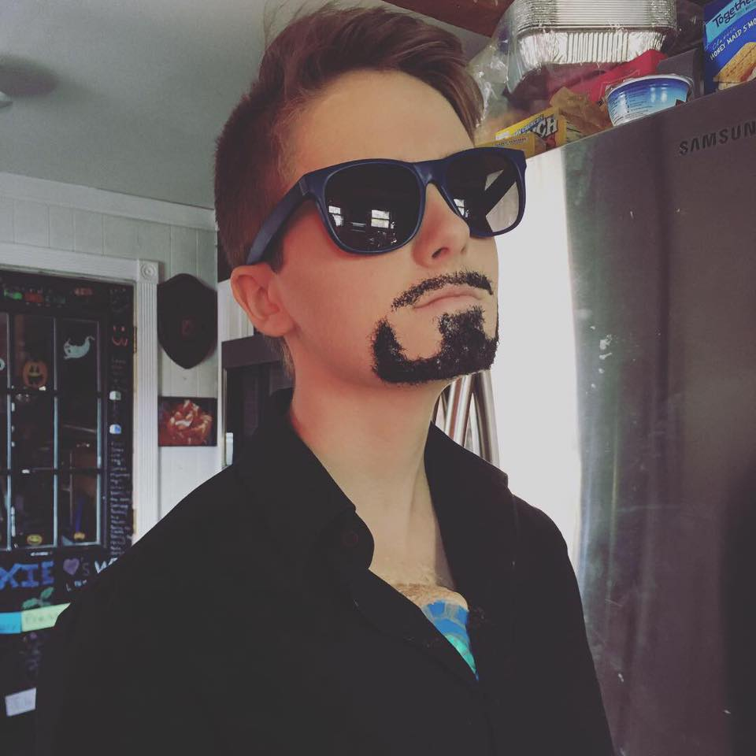
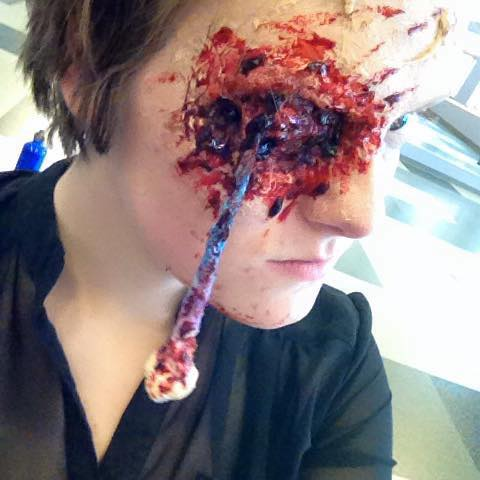
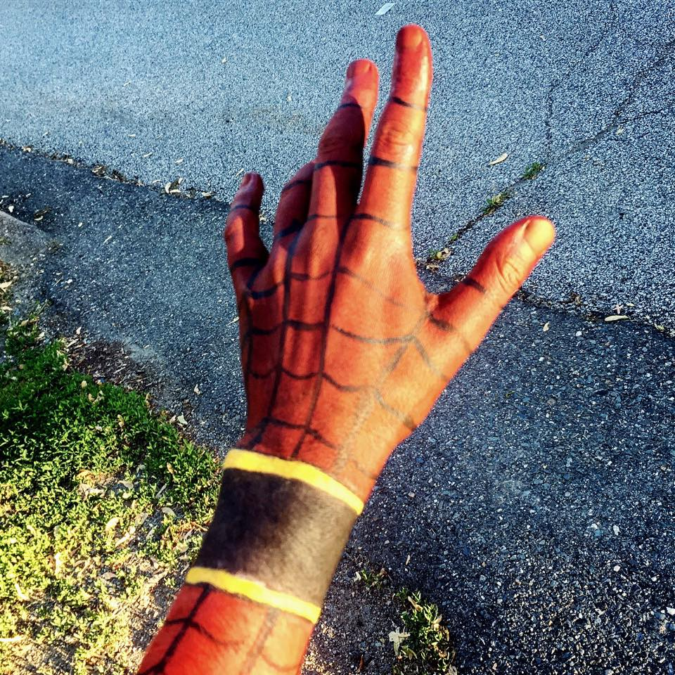

I became interested in special effects my junior year of high school. One of my favorite things to do is make my eye look like it is falling out or missing. I picked up body painting this past summer.

Links: Home Makeup Theatre Geocaching